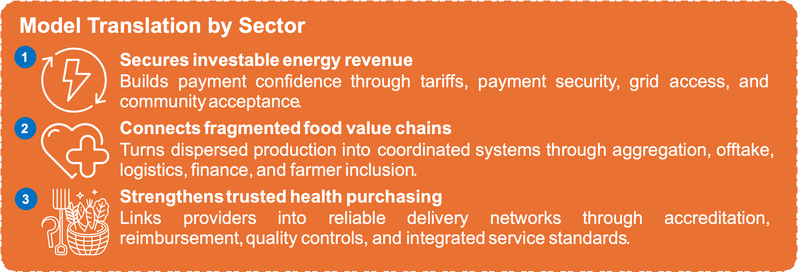
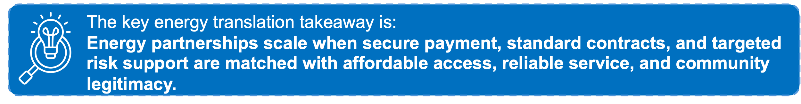
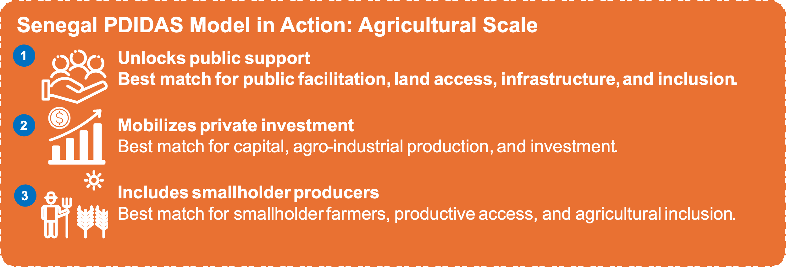
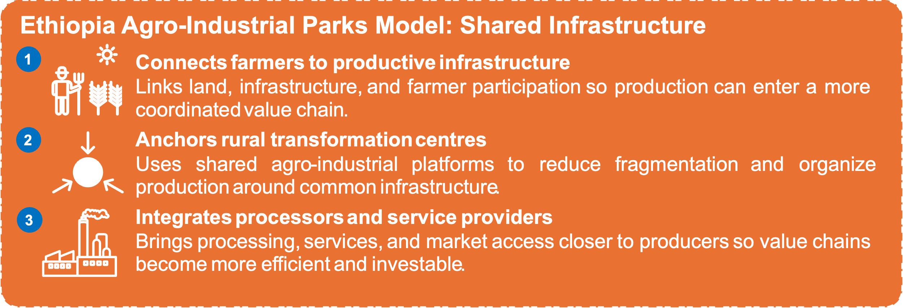
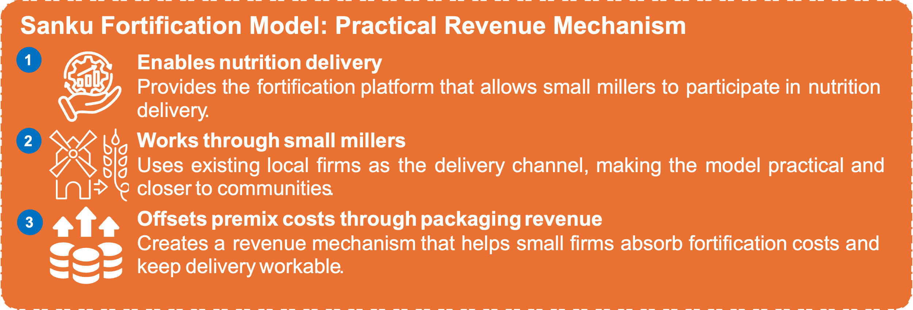

CSOs and development actors make these pathways viable by grounding them in demand, trust, inclusion, accountability and delivery reality. These conditions shape investment performance, not only social outcomes.
Sector–model translation overview
| Sector | Main constraint | Model application | Conditions for scale | CSO role |
|---|---|---|---|---|
| Energy | Payment risk, weak preparation, small, distributed assets, regulatory uncertainty | M1: distributed assets; M2: IPPs and infrastructure; M3: last-mile services | Tariffs, PPAs, payment security, standard contracts, grid readiness, local acceptance | Land and affordability monitoring, engagement, grievances |
| Food and agriculture | Fragmented producers and SMEs, weak offtake, poor logistics, limited finance | M1: aggregation; M2: enabling infrastructure; M3: recurring services | Buyers, quality standards, storage, logistics, finance, fair producer participation | Farmer trust, inclusion, contract fairness, local accountability |
| Health | Fragmented providers, late payment, weak claims and data systems | M1: provider portfolios; M2: infrastructure and digital systems; M3: provider networks | Accreditation, reimbursement, verification, quality, fiscal credibility | Patient trust, equity, quality feedback, continuity monitoring |
11.1 Energy
From isolated assets to credible, affordable and community-legitimate energy systems
Sector proposition
Energy demand does not guarantee investment. Projects scale when revenues are predictable, public counterparties are credible, risks are assigned to the actors that can manage them, and communities accept the service and its cost.
The main barriers are offtaker payment risk, tariff and currency uncertainty, incomplete preparation, slow approvals, weak grid or service systems, and unresolved land or affordability concerns. Energy partnerships therefore require standard contracts, targeted risk support, reliable payment systems and early community engagement. The research identifies payment security, preparation, aggregation and standard documentation as core investment conditions.
11.1.1. How the partnership models translate into energy
Model 1: Aggregation and Warehouse Platforms
Application: distributed energy assets and service portfolios
In energy, this model shows up as portfolio finance for distributed assets and service contracts. It is most relevant where individual opportunities are too small or fragmented to attract finance on their own, such as mini-grids, PAYGo receivables, solar irrigation, productive-use solar, clean cooking, cold-chain energy and maintenance contracts.
The sector translation is simple: aggregation turns fragmented energy demand into a more visible, standardized and financeable portfolio. The key shift is from financing isolated assets to financing a pool of assets with common standards, clearer revenue flows and reusable documentation.
| Element | Energy translation |
| Fragmented opportunity | Mini-grids, PAYGo, solar irrigation, clean cooking and maintenance contracts |
| Aggregation mechanism | Warehouse facility or portfolio vehicle |
| Revenue basis | Customer payments, service fees, verified results payments or offtake |
| Risk support | First-loss tranche, reserve, partial guarantee or currency support |
| Standardization | Technical specifications, customer contracts, O&M terms and reporting |
| Scale pathway | Portfolio refinancing through banks, DFIs or institutional investors |
Model 2: Integrated Project Preparation + Guarantee Platforms
Application: IPPs, transmission, grid infrastructure and large renewable projects
In energy, this model shows up in IPPs, transmission, grid infrastructure and larger renewable-energy projects. It is most relevant where projects are technically promising but cannot reach financial close because preparation is incomplete or investors cannot absorb payment, policy, currency or regulatory risk.
| Project challenge | Platform response |
| Incomplete preparation | Finance feasibility, grid studies, financial models, safeguards, permits and procurement documents |
| Offtaker payment risk | Provide liquidity facilities, guarantees, escrow or payment-security structures |
| Bespoke terms | Standardize PPAs, direct PPAs, concessions, EPC and O&M contracts |
| Currency exposure | Apply limited currency-risk support where justified |
| Regulatory uncertainty | Clarify tariffs, connection rules, licensing and review procedures |
| Fiscal exposure | Apply Value-for-Money tests, liability caps and independent review |
The sector translation is that preparation and guarantees must focus on the risks that block bankability: offtaker payment credibility, tariff clarity, grid connection, permits, currency exposure, public liabilities and standardized contracts. The point is not to guarantee weak projects, but to make viable projects investable.
Model 3: Predictable Delivery Networks
Application: distributed energy services, maintenance and affordable access
Distributed energy depends on service continuity. Maintenance providers, clean-cooking distributors, solar-home-system firms and last-mile agents need clear standards, verified performance and finance linked to reliable delivery.
| Network function | Energy translation |
| Provider onboarding | Qualify suppliers, maintenance firms and last-mile agents |
| Service standards | Set quality, warranty, uptime, repair and consumer-protection rules |
| Payment mechanism | Customer collections, verified results payments or targeted affordability support |
| Verification | Metering, connection records, uptime data and grievance tracking |
| Finance pathway | Working capital or equipment finance tied to performance |
| Scale logic | Reliable service supports repeat customers, revenue and expansion |
11.1.2. What CSOs contribute in energy partnerships
| CSO contribution | Value to the partnership |
| Demand intelligence | Tests actual needs, productive-use potential and affordability before investment |
| Land and social-risk identification | Surfaces disputes, compensation concerns and livelihood effects early |
| Affordability monitoring | Identifies tariffs or payment rules that exclude target users |
| Community engagement | Builds acceptance and reduces avoidable implementation conflict |
| Grievance channels | Tracks service, pricing, land and safety failures |
| Inclusion safeguards | Monitors access for rural households, women, youth and vulnerable groups |
CSOs should support affordable access without hiding a model that cannot operate without permanent subsidy.
11.1.3. Energy readiness questions
- Revenue and affordability: Who pays, under what tariff or payment arrangement, and is it credible and affordable?
- Counterparty credibility: Can the utility, purchaser or customer base pay reliably?
- Risk allocation: Who controls construction, operations, payment, currency, policy, land and community risks?
- System readiness: Are grid access, maintenance, monitoring and productive demand adequate?
- Community legitimacy: Are land, benefit, tariff and grievance issues addressed?
- Replication: Can contracts, standards, reporting and risk instruments be reused?

11.2 Food and Agriculture
From fragmented production activity to inclusive, financeable value chains
Sector proposition
Food partnerships scale when production connects to reliable buyers, logistics, finance and fair participation. Farmers, cooperatives, processors, traders and development actors may already be active, but value remains lost when supply is fragmented, buyers lack consistent quality, storage and transport fail, or connecting SMEs cannot access finance.
The priority is not isolated yield improvement. It is a bankable value chain with clear volumes, standards, prices, delivery terms, risk allocation and benefit sharing. The research identifies cluster infrastructure, enforceable offtake and blended SME finance as the central scaling levers.
11.2.1. How the partnership models translate into food and agriculture
Model 1: Aggregation and Warehouse Platforms
Application: processors, aggregators, cold chain, storage, logistics and productive assets
This model shows up as aggregation of producers, cooperatives, processors, millers, storage operators, logistics providers, productive assets or supply contracts. It is most relevant where supply is fragmented but collectively bankable.
| Element | Sector translation |
| Fragmented opportunity | Farmers, cooperatives, aggregators, millers, processors, storage and logistics providers |
| Aggregation mechanism | Producer platform, supply portfolio, warehouse vehicle or SME finance facility |
| Revenue basis | Purchase agreements, procurement contracts, exports, service fees or warehouse receipts |
| Risk support | First-loss capital, working-capital guarantees, reserves, insurance or technical assistance |
| Standardization | Quality, traceability, delivery, pricing, contracts and reporting |
| Scale pathway | Finance against pooled supply and credible buyer demand |

The sector translation is that aggregation connects dispersed production to credible buyers, quality standards, working capital and logistics. The focus is less on individual farmers or assets, and more on the missing middle that links production to markets.Model 2: Integrated Project Preparation + Guarantee Platforms
Application: agro-industrial zones, irrigation, storage, cold chain and logistics corridors
Large agricultural infrastructure becomes investable only when supply, buyers, operating costs, land arrangements and community effects are credible.

| Project challenge | Platform response |
| Infrastructure without buyer demand | Require credible processor, purchaser or offtake commitments before scaling |
| Weak preparation | Test volumes, throughput, logistics, storage, processing demand and operating costs |
| Land and community risk | Establish land rules, consultation, compensation, benefit-sharing and grievance processes |
| SME exclusion | Pair infrastructure with finance, technical assistance and market access |
| Seasonal cash flows | Use working capital, storage, offtake and targeted risk-sharing |
| Policy barriers | Clarify standards, licensing, trade, procurement and pricing risks |
Model 3: Predictable Delivery Networks
Application: extension, veterinary services, inputs, fortification, nutrition and market access
Food systems also require recurring services: inputs, extension, veterinary care, mechanization, aggregation, traceability and nutrition delivery. A predictable network qualifies providers, verifies outcomes and links reliable service to payment and finance.
| Network function | Sector translation |
| Provider onboarding | Qualify millers, suppliers, extension providers, veterinarians, aggregators and processors |
| Service standard | Set quality, safety, fortification, traceability and delivery requirements |
| Payment mechanism | Processor payments, public procurement, service vouchers, results payments or blended working capital |
| Verification | Product testing, farmer records, traceability data and procurement compliance |
| Finance pathway | Working capital, equipment or input finance linked to performance |
| Scale logic | Verified demand and delivery make local providers financeable |

11.2.2. What CSOs contribute in food and agriculture partnerships
| CSO contribution | Value to the partnership |
| Farmer trust | Supports participation in aggregation, service and offtake arrangements |
| Production intelligence | Tests assumptions on volumes, seasons and adoption barriers |
| Women and youth inclusion | Prevents platforms from serving only stronger producers |
| Contract monitoring | Identifies late payments, unfair prices and opaque quality deductions |
| Capability support | Helps farmers and SMEs meet standards and join market systems |
| Social accountability | Tracks land, water, labour, livelihoods and benefit-sharing effects |
Aggregation creates scale but can reduce farmer voice. Contracts, monitoring and grievance systems must preserve fair participation.
11.2.3. Food and agriculture readiness questions
- Demand and offtake: Is there a credible buyer, processor or public purchaser?
- Producer participation: Can farmers and SMEs meet volume and quality requirements on fair terms?
- Infrastructure and logistics: Are storage, cold chain, transport, power, irrigation and processing adequate?
- Finance and risk: What support addresses the binding constraint?
- Policy distortion: Do trade, pricing, subsidy or procurement rules weaken viability?
- Inclusion and legitimacy: Are smallholders, women, youth and affected communities protected?
- Replication: Can contracts, standards, data and finance arrangements be reused?
11.3 Health
From fragmented providers to predictable, trusted and financeable delivery networks
Sector proposition
Health partnerships scale when private providers connect to reliable purchasing, clear quality rules and patient accountability. Clinics, laboratories, pharmacies, equipment providers and digital-health firms often serve patients already, but weak reimbursement, claims, supply-chain and referral systems keep delivery fragmented.
The main issue is not need for care. It is who pays, when, against what standards and with what patient protections. Accreditation, predictable reimbursement, digital verification, provider integration and credible public stewardship convert existing capacity into a scalable system.
11.3.1. How the partnership models translate into health
Model 1: Aggregation and Warehouse Platforms
Application: provider, pharmacy, diagnostic and equipment-finance portfolios
This model pools accredited providers, equipment needs or verified claims that are too small for efficient financing individually.
| Element | Health translation |
| Fragmented opportunity | Clinics, pharmacies, laboratories, diagnostics, equipment and provider receivables |
| Aggregation mechanism | Provider portfolio, equipment-finance facility or claims-backed warehouse |
| Revenue basis | Reimbursements, insurance claims, service contracts or verified procurement payments |
| Risk support | First-loss facility, claims liquidity buffer, guarantee or concessional working capital |
| Standardization | Accreditation, quality, coding, claims documentation and reporting |
| Scale pathway | Finance against visible service demand and credible payment flows |
Aggregation requires reliable quality controls and payment data. Pooling uncertain claims or weak providers does not make them investable.
Model 2: Integrated Project Preparation + Guarantee Platforms
Application: hospitals, diagnostics, equipment PPPs and digital health infrastructure
Health infrastructure and technology require preparation that tests service financing, utilization, quality, data governance and continuity of care.
| Project challenge | Platform response |
| Infrastructure without service financing | Link preparation to utilization, reimbursement and operating budgets |
| Equipment without maintenance incentives | Tie payments to uptime and verified service |
| Fragmented digital systems | Define interoperability, data governance, adoption and purchasing pathways |
| Public payment risk | Use bounded liquidity or payment-security mechanisms tied to clear claims rules |
| Quality and equity gaps | Set clinical, access, inclusion and grievance requirements |
| Unclear fiscal exposure | Assess long-term budgets, reimbursement obligations and liabilities |
Risk support should solve defined payment or delivery constraints. It should not replace purchasing reform or finance uncontrolled expansion.
Model 3: Predictable Delivery Networks
Application: integrated provider networks, strategic purchasing and digital health
This is health’s most direct pathway. A coordinated network links accredited clinics, laboratories, pharmacies and digital-health providers to standards, claims, payment, procurement and supervision.
| Network function | Health translation |
| Provider onboarding | Accredit or empanel clinics, labs, pharmacies and digital-health providers |
| Service standards | Set quality, reporting, patient-protection, referral and continuity rules |
| Payment mechanism | Insurance reimbursement, public purchasing, claims settlement or service contracts |
| Verification | Digital claims, provider registries, quality audits, referral data and fraud controls |
| Finance pathway | Working capital, equipment or supply-chain finance tied to verified payment |
| Scale logic | Reliable payment and oversight support responsible expansion |
Accreditation → Predictable payment → Finance → Expanded, accountable delivery
11.3.2. What CSOs contribute in health partnerships
| CSO contribution | Value to the partnership |
| Patient trust | Supports uptake of integrated private delivery |
| Access and equity monitoring | Identifies exclusion of rural, low-income and vulnerable groups |
| Quality and continuity feedback | Tracks stock-outs, interrupted treatment, referral failures and poor care |
| Grievance channels | Captures denial of care, informal charges, mistreatment and privacy failures |
| Data and consent safeguards | Protects patients in digital claims and health-information systems |
| Public-value accountability | Tests whether private participation improves affordability, access and quality |
11.3.3. Health readiness questions
- Purchaser credibility: Can the public agency, insurer or buyer pay reliably?
- Accreditation and quality: Are entry rules, supervision and sanctions clear?
- Claims and payment: Are verification and settlement timelines workable?
- Provider integration: Can providers connect to referrals, reporting, procurement and public-health priorities?
- Finance and liquidity: Can predictable payment unlock working capital or equipment finance?
- Fiscal credibility: Are commitments and risk tools affordable over time?
- Trust and equity: Does the model protect affordability, inclusion, privacy, quality and continuity?
- Replication: Can the same rules and systems apply across facilities and regions?
Cross-sector conclusion: What the translation reveals
Table 4: Same issues, different sectors: translating shared constraints into energy, agriculture, and health realities – and roles that make them work.Table 4: Same issues, different sectors: translating shared constraints into energy, agriculture, and health realities – and roles that make them work.The same three models travel across energy, food and agriculture, and health, but they do not solve the same problem in the same way.
In energy, the binding issue is often payment credibility, risk allocation and service continuity. Partnerships must make revenues reliable, counterparties credible and services trusted by communities.
In food and agriculture, the binding issue is value-chain fragmentation. Partnerships must connect producers, SMEs, infrastructure, buyers, logistics and finance into arrangements that are both bankable and fair.
In health, the binding issue is predictable and accountable service delivery. Partnerships must link providers to purchasing, quality standards, claims, referrals, patient protection and public stewardship.
The common lesson is that partnership models only scale when they are translated into the operating reality of each sector. Aggregation, preparation and delivery networks are not generic instruments. They become effective when they respond to each sector’s specific revenue logic, delivery structure, risk profile and accountability requirements.